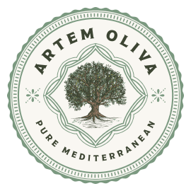

Gemlik
Gemlik zeytini, Marmara ve çevresinde yaygın olup yumuşak içimli ve dengeli zeytinyağı profilleri üretir.
Gemlik odaklı zeytinyağı markaları, benzer bölgeler ve ilgili zeytin çeşitleri. 13 marka listesi.
Bu Sayfadaki Markalar
Gemtar
Gemlik merkezli üretici marka. Gemlik zeytininden natürel sızma ve farklı hacimlerde zeytinyağı serileri sunar....
Marmarabirlik
Marmara Zeytin Tarım Satış Kooperatifleri Birliği. Türkiye'nin en büyük sofralık zeytin üreticisi olup zeytinyağı ürünleri de sunar....
Mera Ovası
Marmara bölgesinde, Erdek çevresindeki Gemlik tipi zeytinlerden butik üretim yapan artizanal zeytinyağı markası. Küçük partiler halinde soğuk sıkım natürel sızma zeytinyağı üretir....

Premium / ButikArtem Oliva
Butik üretim odaklı natürel sızma zeytinyağı markası....
Gemlik Zeytin Evi
Gemlik bölgesinde zeytin ve zeytinyağı ürünleri sunan yerel marka. Cam şişe ve teneke seçenekleriyle öne çıkar....
Gemlik Zeytincisi
Gemlik odaklı zeytin ve zeytinyağı üreticisi. Bölgesel kökeni öne çıkan natürel sızma ürünleri bulunur....
Gemlika
Gemlik zeytininden üretilen natürel sızma zeytinyağına odaklanan bölgesel marka....
Granpa
Marmara bölgesi odaklı üretici marka. Trilye/Gemlik hattında natürel sızma ürünleriyle öne çıkar....
Solive
Gemlik zeytini ve erken hasat zeytinyağı serileriyle öne çıkan bölgesel marka. Zeytin Ağacı mağaza yapısı içinde satış yapar....
Trilye
Bursa'nın Mudanya ilçesindeki tarihi Trilye (Tirilye) bölgesinden adını alan zeytinyağı markası. Bölgenin zengin zeytin mirasını yansıtır....
Velvet
Bursa hattında Gemlik tipi zeytinlerden üretim yapan üretici. Orhangazi-İznik çevresindeki zeytinlerden natürel sızma seriler sunar....
Yelkenli
Mudanya merkezli üretim ve satış yapan marka. Teneke ve cam ambalajlı zeytinyağı ürünleri sunar....
Zeytursan
Marmara bölgesinde zeytinyağı üretimi ve işleme yapan firma. Hem sofralık zeytin hem de zeytinyağı ürünleri sunar....